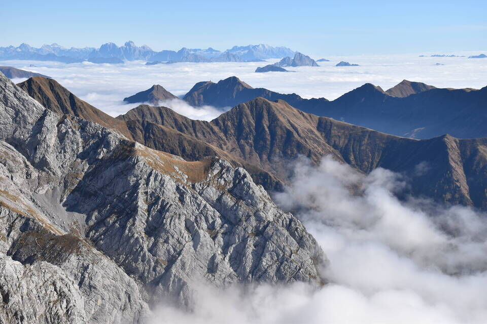
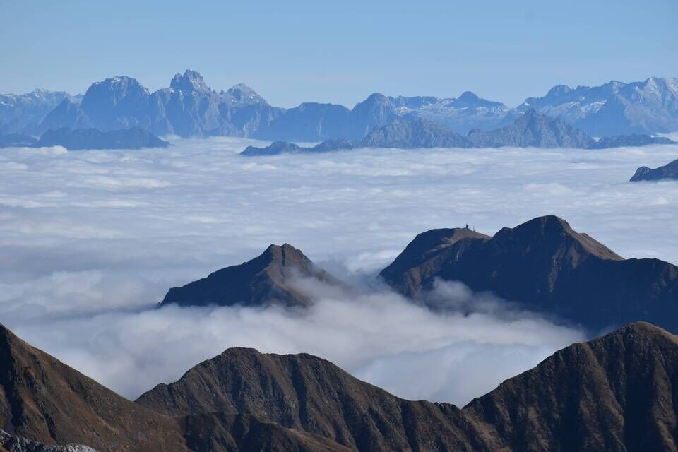

Quando vado a Collina penso sempre a Pietro Samassa, figura leggendaria di questi monti, colui che per primo ne calcò la sommità e accompagnò i primi alpinisti (fra cui Hans Wödl, traversata Canale - Capolago). È grazie ad Enrico Agostinis se abbiamo notizie dettagliate su Pietro Samassa (leggi Pietro Samassa alias Píori di Tòch); monumentale poi il suo preziosissimo lavoro di ricerca microtoponomastica: Toponomastica ragionata (e non) della Villa di Collina, Territorio della Carnia.
Pensa che ancora nel 1899 c'erano dubbi enormi sull'orografia dei monti di Volaia: sulla Cronoca della SAF l'illustre Arturo Ferrucci chiedeva di determinare se il M. Canale e il Capolago fossero due cime distinte oppure si riferissero alla stessa vetta. Senza contare che nel numero del 1917 (!) della Cronoca della SAF veniva riportata la notizia, appresa tramite l'Alpine Journal di Londra (!), dell'esistenza di «una finestra naturale che traforerebbe la cresta principale delle Carniche e piu precisamente la cima stessa del M. Canale». Ma questo è assurdo, dato che già nella monografia di Hans Wödl del 1902 si parlava appronfonditamente del Tangelloch.
Enrico Agostinis ci spiega questo riguardo al toponimo «Crèto di Cjanâl»:
«Fino a tempi recenti a Collina con questo termine si identificava l’intera catena dei c.d. “Monti di Volaia” visibile da Collina stessa (dal Sasso Nero al m. Capolago), cosí detta per le ampie e profonde gole che ne solcano il versante meridionale. Questo toponimo originale nella parlata locale mi è stato suggerito solo in tempi relativamente recenti: prima di allora avevo sempre considerato “monte Canale” un toponimo di conio recente e di origine schiettamente italiana, generato dalla toponomastica ufficiale come tutte le altre cime che circondano Collina, con la sola eccezione del Cogliàns.
D’altra parte, a sostegno della verosimiglianza dell’originalità del toponimo va pure sottolineato come la Crèto di Cjanâl sia, naturalmente nelle sue propaggini inferiori, una presenza innegabilmente significativa nell’economia locale: alla sua base si pascola il bestiame (Cjanalèto), si taglia legname (Circinúts) e si sfalcia (Pàlos di Marinè o di Sèrgjo). La crèto soprastante val bene un nome proprio ancorché, come di consueto nelle Alpi orientali, derivato dalla malga Cjanalèto che le sta alla base. Una denominazione quasi funzionale, insomma. La montagna in sé, il culmine, la vetta, come locus non interessa e non ha nome, a conferma del principio che tutto ciò che non serve non necessita neppure di un nome.»
Quante volte dal fondovalle e dal Pecól dabàs ho guardato lassú, in mezzo a quei canaloni. Ricordo con infinita nostalgia quando «agli esordi» fantasticavo su quei luoghi al tempo a me preclusi. Il fascino stava e sta tutto nel mistero.
Quante volte ho letto, con gli occhi sognanti, l'articolo del Ravanatore: «Il Canale 2540 m, una cima allo stato originario».
Sono tempi che non torneranno piú. Ora, nella nostra epoca basata sulla superficialità e sull'apparenza, tutto si vuole e tutto è lecito: pure la vernice, da nessuno mai chiesta né desiderata, che non possiamo ignorare e ci preclude ciò che nei monti cerchiamo. Se non è egoismo questo.
Le scorciatoie sono sempre gradite: dal Puint dal Mus su tra larici e mughi.(1)
Neppure questa volta ho badato ai Péçs: si ha la testa fra le nuvole.
Ramo destro dell'Agâr di Róndoi, che piú in basso precipita con un'inquitenta forra: povera Ornella.

La prima volta le difficoltà mi parvero insormontabili: bisogna pur maturare esperienza. Il riuscire ad ogni costo e con ogni mezzo (bolli, cavi, gps, ecc...) ci dà sí l'obiettivo ma in contraccambio tutto ci toglie: e allora il M. Canale diverrà come tutti gli altri. Senza emozioni i monti ritornano alla loro storia essenziale: inutili cumuli di sassi.
Quassú il baracchino di guerra. Il Tangelloch per un periodo è stato presidiato dagli italiani durante la Grande Guerra.
Alla memoria (vedi qui).
Quante volte ho guardato il potente sperone che si erge a cavalcioni fra i due rami dell'Agâr di Róndoi, con quella sua lastra giallastra. I dettagli sono importanti.
Tutto ciò che serve.
Chissà come fece Compton nel 1899 a passare per cresta dal Capolago al Canale: scesero e risalirono oppure scavalcarono il torrione? Ed ebbe pure il tempo di mettersi a disegnare il Tangelloch!
Gaberscik dice 40m di III: andateci voi.
Il Clap Niori: mi piacerebbe tanto tornarci.
Con Kelen e Luciana. Le giornate d'ottobre sono sempre una meraviglia.
Scendo all'antecima per vedere bene il lago.
Che visione grandiosa! Sullo sfondo il Cogliàns, con in ombra l'imponente agâr dal Furlàn che solca il versante Ovest del monte.
Le lontane Giulie galleggiano sopra il mare di nubi.
Tutti sanno che per salire al monte Canale bisogna passare da un ramo all'altro dell'Agâr di Róndoi. Castiglioni traversa in alto, il Ravanatore in basso, Armellini in mezzo. E Pietro Samassa risale l'Agâr di Róndoi direttamente dal basso.(2)
Con la malinconica coscienza di aver realizzato — e quindi distrutto — un sogno, m'inabisso nella nebbia. La montagna non è per nostalgici.

LATO B (pragmatic side). (Un omaggio: ve lo ricordate?)
- Il mitico Rino («Il Ravanatore»), entrato di traverso nel ramo dx attraverso l'accesso «classico», una volta arrivato al sommo dei prati, anziché proseguire per lo stesso canalone (sempre in sx orografica del ramo dx) per paretine e arrivare al baracchino diruto, ha attraversato entrando subito nel ramo sx, dato che qui i due rami si uniscono e sprofondano lungo la forra di Ornella verso il fondovalle. (post; Gaberscik ed. 2024 it. 1147).
- Nella guida CAI-TCI Alpi Carniche di Ettore Castiglioni viene consigliato di proseguire dal baracchino sullo stesso ramo dx (prima in sx e poi in dx orografica; via di guerra al Tangelloch). Prima di giungere al «gran foro» bisogna trovare il modo di traversare al ramo sx, cosa né facile né chiara, sia per me che ho risalito entrambi i rami — senza vederci chiaro — sia per A. Armellini che ha effettuato il traverso (pessima roccia a quanto mi dice!). (Gaberscik ed. 2024 it. 1148 e 1149 (non del tutto chiaro a me; sembra inoltre ignorare i resti del sentiero di guerra al Tangelloch); De Rovere-Di Gallo it. 31a; Castiglioni it. 126a)
- Nella guida Trois Neris di Antonio Armellini viene consigliato — ed è la cosa migliore — di abbandonare il ramo dx rimontando l'evidente canalino che si alza sul lato opposto del canale (guardando dal baracchino diruto). Questo canalino a raggiungere una spalla erbosa ove si trova una provvidenziale e stretta cengia che immette nel ramo sx. (Gaberscik ed. 2024 it. 1150; De Rovere-Di Gallo it. 31aa; Castiglioni it. 126b)
- Nella guida CAI-TCI Alpi Carniche di De Rovere-Di Gallo viene affermato (p. 133) che i primi salitori (quindi Pietro Samassa!) «rimontarono anche la parte inferiore del canalone partendo dalla testata della Val Fulín». Immagino s'intenda la dx orografica. undo
***
(Disegno di Rudolf Reschreiter. Hans Wödl, Das Biegengebirge im Hauptzuge der Karnischen Alpen, DOËV 1901)